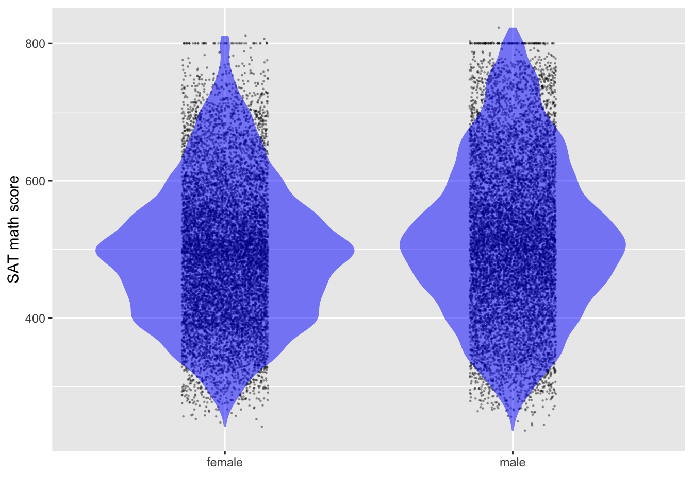

This case study is motivated by the common misconception that “estimation” is more appropriate than “prediction.” The setting is gender preconceptions, specifically the claim that “boys are better at math than girls.” The data we looked at are math SAT scores for males and for females.
Although published studies use actual individual-level data about SAT scores—for instance, a data frame with 1.5 million rows and the variables sex and score—those data are not available to us. Instead, I’ve reconstructed 20,000 rows of such raw data from the summary information provided by the College Board. The data frame is called Math_scores. (It is not available from R packages.)
Here is an estimation: What is the difference in mean SAT scores for females and males?
Math_scores |>
lm(score ~ sex, data=_) |>
conf_interval()| term | .lwr | .coef | .upr |
|---|---|---|---|
| (Intercept) | 493.26869 | 495.44183 | 497.61497 |
| sexmale | 19.33271 | 22.40599 | 25.47927 |
This model summary points to males having a higher average math SAT score than females, by about 20 points. The confidence interval has a width of about 6 points. In the actual data, which had 1.5 million rather than 20 thousand rows, the confidence interval would be much narrower, about 1 point.
There are two major problems with interpreting such results as meaning “boys are better at math than girls.”
- The calculations for the confidence interval on the
sexmaleeffect size are factually correct, but they are incomplete and misleading. The model represents an oversimplified DAG: \(\mathtt{sex} \rightarrow \mathtt{score}\). In reality there are many other factors at work. One that we talked about in class is that a higher proportion of women take the SAT than of men. We know from other sources (and common sense) that the smaller the fraction of a group who take the SAT, the higher the average scores will be. We can estimate the effect size of SAT with respect to “fraction taking the test,” and it accounts for the observed difference in mean scores between males and females. To summarize, female test scores are on average lower than males because a more inclusive group of women take the test than of men. This is ironic: because women are more likely to go to college than men (a sign of academic success for women), the women’s scores are on average worse.
More germane to today’s topic of prediction …
- A statement like “boys are better at math than girls” tends to get translated to valuations of the skills of individuals. But if it is individuals we are thinking of, we should be framing the data analysis in terms of prediction rather than estimation. In this case, since
sexis a categorical explanatory variable, the predictive probability distribution is well indicated by a violin plot, as in Figure 1.
gf_jitter(score ~ sex, data = Math_scores, size=0.2, width = 0.15, height = 0, alpha = 0.3) %>%
gf_violin(color = NA, fill = "blue", alpha = 0.5) %>%
gf_labs(y = "SAT math score", x = "")
A reasonable interpretation of this graph: Knowing the sex of a person tells nothing about the person’s SAT score.
Another way to look at the problem is whether knowing the test score gives us insight into the sex of the person. We will study the modeling technique used to answer such a question in Lesson 33. But for now, all you need to know is that it’s possible to model the probability that a person is female given the test score.
Math_scores <- Math_scores |> mutate(female = zero_one(sex, one="female"))
model <- glm(female ~ splines::ns(score,4), data = Math_scores, family="binomial")
model_plot(model, interval="none", show_data=FALSE)Except for scores above 650, the difference between the model values and 50% probability would be statistically undetectable unless averaging over groups of 400 or larger. At the very highest scores (around 750-800), there are about 2 males for every female. Even that hardly justifies applying the claim that “boys have high math scores than girls” to individuals.